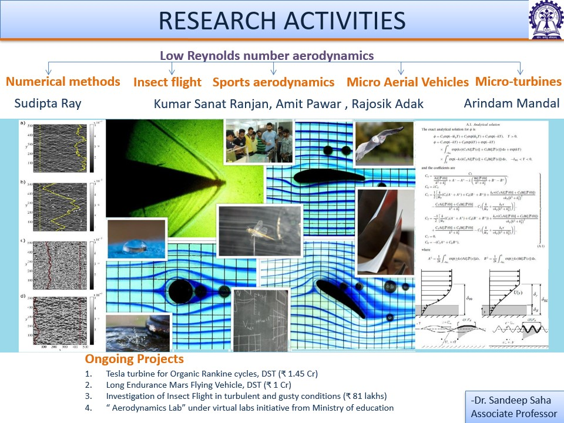
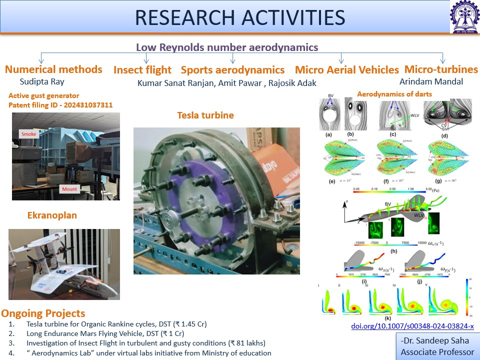
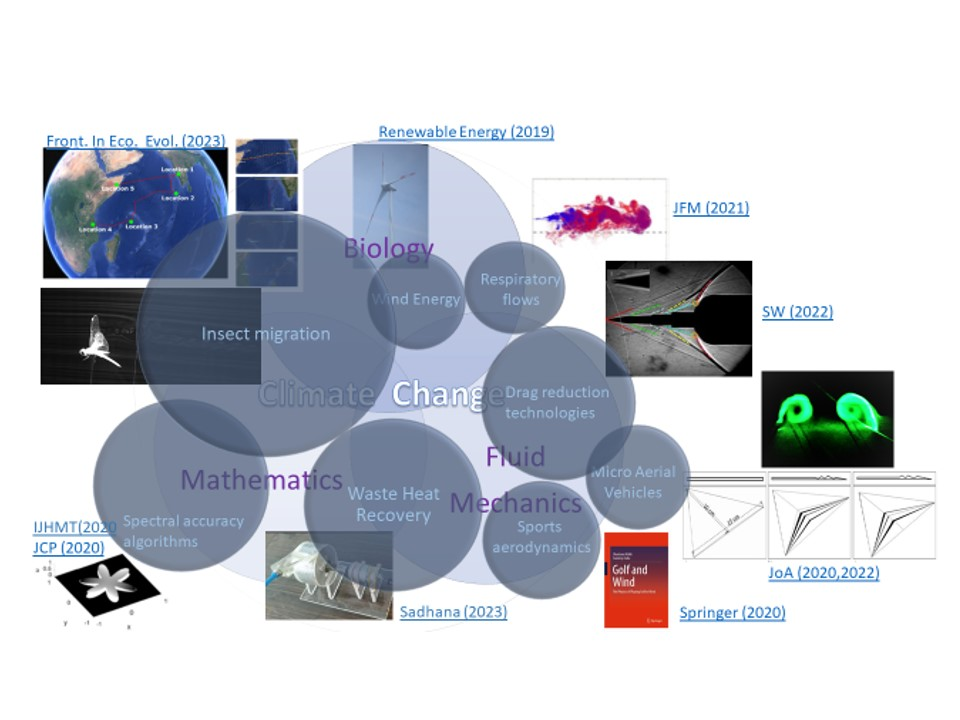
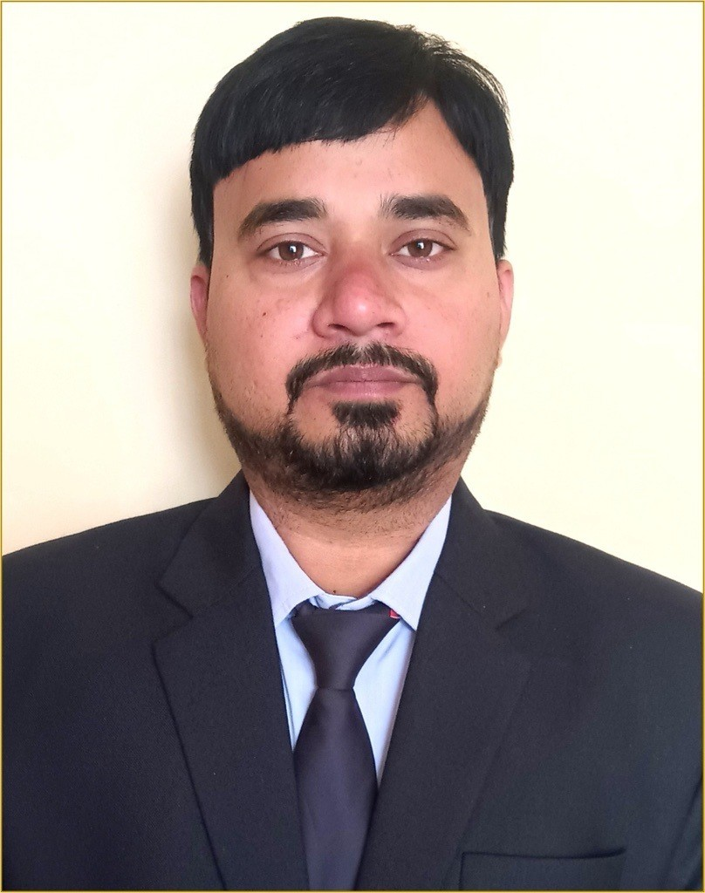
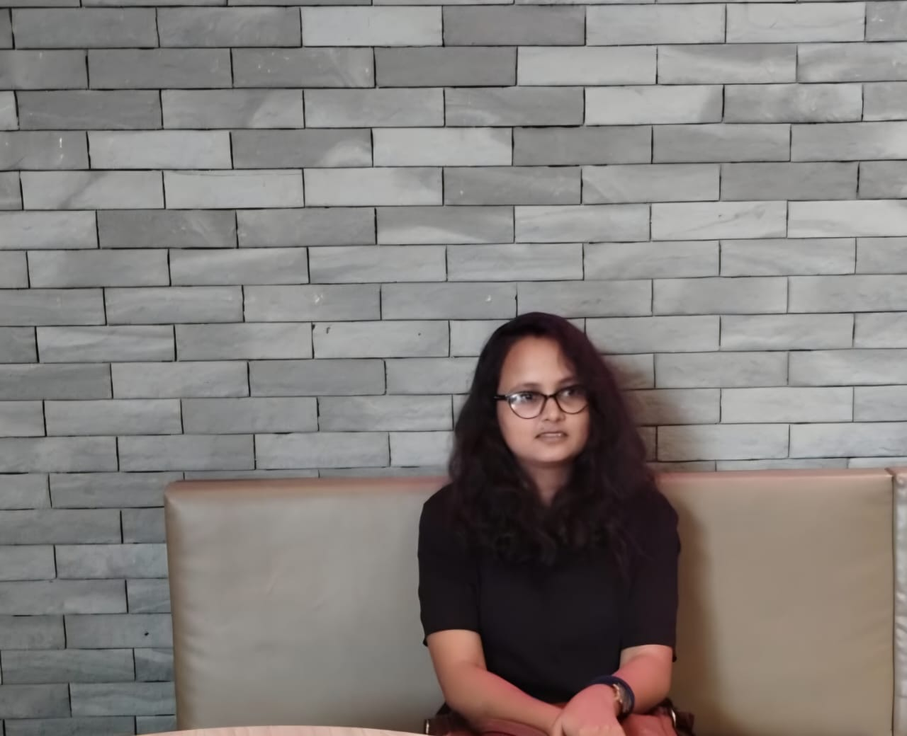
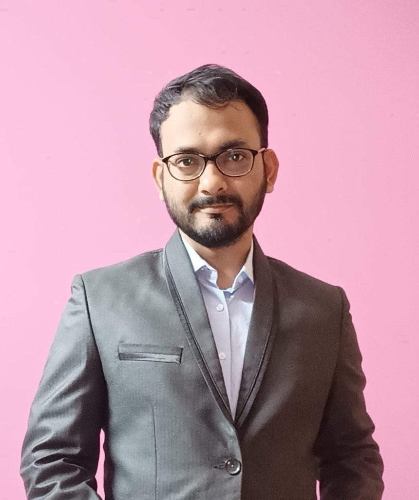
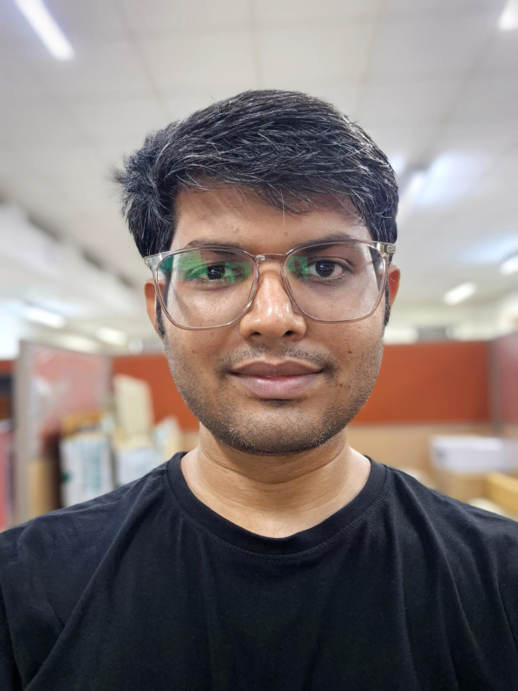
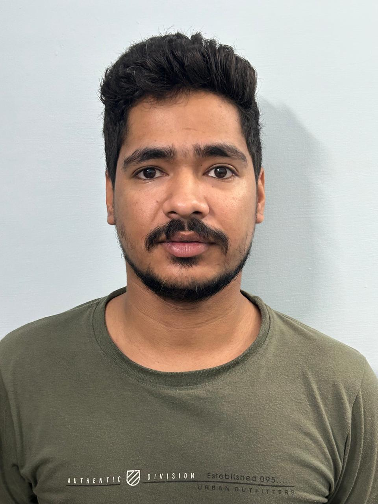
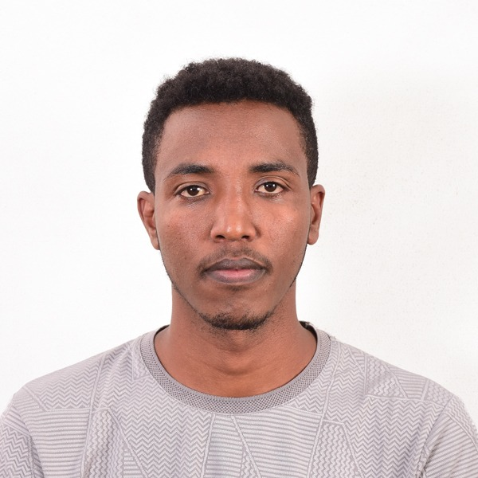

About
Welcome to my academic homepage. I am an Associate Professor in the Department of Aerospace Engineering at IIT Kharagpur.Our research explores the extraordinary transoceanic migration of the Pantala flavescens dragonfly across the Indian Ocean. We investigate the complex bio-aerodynamic principles sustaining this epic marathon, specifically focusing on their corrugated wing structures and tandem wing configurations. Utilizing experimental techniques like smoke flow visualization and high-speed Schlieren imaging alongside direct numerical simulations, we decode the vortex dynamics and lift-generation strategies of these insects. These natural wing corrugations significantly delay stall and enhance overall aerodynamic efficiency. Ultimately, we apply these biological discoveries to design and engineer the next generation of highly efficient, bio-inspired Micro Aerial Vehicles (MAVs).
Latest News
- [Upcoming 31 May 2026] Talk on “Infinite Journeys on Finite Wings: A Dragonfly’s Epic Marathon across the Indian Ocean” at the Jawaharlal Nehru Planetarium, Bangalore (Mini Auditorium, U R Rao Bhavana) from 4:00 PM to 5:30 PM.
- [MAY 2026] Represented IIT kharagpur at AIAA. Ranked 5th in Asia and 39th Globally.
Research Interests
Our group's research lies at the intersection of aerospace engineering, computational mechanics, and high-performance computing. Core focus areas include:
- Numerical Analysis: Development of high-order methods, including Chebyshev spectral collocation techniques for differential equations.
- Computational Fluid Dynamics: Design of robust global space-time solvers and handling of singularly perturbed problems with complex boundary layers.
- Advanced Coordinate Mappings: Utilizing adaptive, algebraic, and tangent mapping schemes to resolve sharp interior and boundary layers in physical domains.
- High-Performance Computing: Accelerating multi-dimensional solvers for convection-diffusion models.
Research Highlights



Selected Publications & Patents
Patents
-
Bladeless Multistage Compressor
S. Saha, A. Mandal, M. P. Panda, and R. Raj.
Indian Patent Application No. 202431043995. Published in the Official Journal No. 24/2025 on 13/06/2025. -
Active 3D gust generator system for wind tunnel testing
M. Arya and S. Saha.
Indian Patent Application No. 202431037311. Published in the Official Journal No. 24/2025 on 13/06/2025. -
Automatic Bluetooth-controlled Internal Space Spray Dispenser
G. Wadhwa, M. Arya, and S. Saha.
Indian Patent Application No. 202431037315 (Filed). -
Forest Cover Analysis Using Aerial Imagery
S. Saha, V. A. Takte, A. K. Singh, K. Ramani, J. Gupta, S. K. Singh, I. Kanodia, D. Bawari, N. K. Kadam, and S. Mohanty.
Indian Patent Application No. 22072 (Filed).
Books
-
Golf and Wind: The Physics of Playing Golf in Wind
S. Malik and S. Saha.
Springer Nature Singapore, 2021.
Book Chapters & Technical Reports
-
Aerodynamic Performance of a Tandem Wing Configuration Inspired from Dragonfly Gliding Flight for MAV Application
R. Adak, A. Mandal, and S. Saha.
Lect. Notes Mechanical Engineering: Fluid Mechanics and Fluid Power (Volume 2), Springer Nature. -
On the evolution of vortical disturbances in two-fluid boundary layers
T. A. Zaki, S. Saha, and S. Y. Jung.
Technical Report FA8655-09-1-3059, European Office of Aerospace Research and Development, 2011.
Journal Articles
-
A unified perspective on vortical and interfacial instabilities in fluid layers
S. Saha and S. Chakraborty.
Frontiers in Mechanical Engineering, 11:1706474, 2025. -
Direct numerical simulations of dragonfly-inspired corrugated tandem airfoils at low Reynolds number
R. Adak, A. Mandal, and S. Saha.
Bioinspiration & Biomimetics, 20(4): 046013, 2025. -
Reynolds-averaged Navier-Stokes assisted direct numerical simulation of low Reynolds number flow over airfoils
R. Adak, A. Mandal, and S. Saha.
Physics of Fluids, 36: 127138, 2024. -
Assessment of etiology and pharmacotherapy of patients with anemia in chronic myeloid leukemia: Challenges and opportunities in a tertiary care government hospital
R. Jana, S. N. Baul, S. Saha, S. Chattopadhyay, A. Mandal, and A. Ghosh.
Natl. J. Physiol. Pharm. Pharmacol., 14(12): 2525-2529, 2024. -
Transoceanic migration network of dragonfly Pantala flavescens: origin, dispersal and timing
K. S. Ranjan, A. A. Pawar, A. Roy, and S. Saha.
Frontiers in Ecology and Evolution, 11:1152384, 2023. -
Aerodynamic Efficiency Enhancement of Delta Wings for Micro Air Vehicles Using Shape-Optimization
B. B. Gurung and S. Saha.
Journal of Aircraft, 60(3), 2023. -
Stepped aerospike for enhanced drag reduction using multiple intermediate shocks
A. D. Kumar, A. Mandal, S. Majumder, and S. Saha.
Shock Waves, 32: 485-495, 2022. -
Colliding respiratory jets as a mechanism of air exchange and pathogen transport during conversations
A. Giri, N. Biswas, D. L. Chase, N. Xue, M. Abkarian, S. Mendez, S. Saha, and H. A. Stone.
Journal of Fluid Mechanics, 930(R1), 2022. -
Corrugation Assisted Enhancement of Aerodynamic Characteristics of Delta Wing for Micro Aerial Vehicle
P. Mukherjee, A. A. Pawar, K. S. Ranjan, and S. Saha.
Journal of Aircraft, 58(2), 2021. -
Outcome of Surveillance Stool Culture and Sensitivity, Followed by Needful Intervention in Patients Undergoing Hematopoietic Stem Cell Transplant...
S. Roy, P. Nandi, S. Saha, S. N. Baul, S. Bhanja, R. De, and T. K. Dolai.
Original Article. -
A reconstruction-based Chebyshev-collocation method for the Poisson equation: An accurate treatment of the Gibbs-Wilbraham phenomenon on irregular interfaces
S. Ray and S. Saha.
Journal of Computational Physics, 418: 109559, 2020. -
An exponentially accurate spectral reconstruction technique for the single-phase one-dimensional Stefan problem with constant coefficients
S. Ray, A. K. Suthar, and S. Saha.
International Journal of Heat and Mass Transfer, 158: 119841, 2020. -
Coriolis force-driven instabilities in stratified miscible layers on a rotationally actuated microfluidic platform
S. Sengupta, S. Ghosh, S. Saha, and S. Chakraborty.
Physical Review Fluids, 4: 113902, 2019. -
Rotational instabilities in microchannel flows
S. Sengupta, S. Ghosh, S. Saha, and S. Chakraborty.
Physics of Fluids, 31: 054101, 2019. -
Theoretical performance estimation of shrouded-twin-rotor wind turbines using the actuator disk theory
V. Kumar and S. Saha.
Renewable Energy, 134: 961-969, 2019. -
Disturbance amplification in boundary layers over thin wall films
S. Saha, J. Page, and T. A. Zaki.
Physics of Fluids, 28(2): 024108, 2016. -
Autocatalytic Reaction Fronts Inside a Porous Medium of Glass Spheres
S. Atis, S. Saha, H. Auradou, D. Salin, and L. Talon.
Physical Review Letters, 110: 148301, 2013. -
Phase diagram of sustained wave fronts opposing the flow in disordered porous media
S. Saha, et al.
EPL (Europhysics Letters), 101: 38003, 2013. -
Low Reynolds number suspension gravity currents
S. Saha, D. Salin, and L. Talon.
The European Physical Journal E, 36:85, 2013. -
CHEMO-hydrodynamic coupling between forced advection in porous media and self-sustained chemical waves
S. Atis, S. Saha, H. Auradou, J. Martin, N. Rakotomalala, L. Talon, and D. Salin.
Chaos, 22: 037108, 2012. -
On shear sheltering and the structure of vortical modes in single- and two-fluid boundary layers
T. A. Zaki and S. Saha.
Journal of Fluid Mechanics, 626: 111-147, 2009.
Conference Proceedings
-
Investigation of Flight Conditions where Box-Wing Outperforms Mono-Wing Configurations for Small UAVs
J.J. Aloor, B.B. Gurung, G. Wadhwa, M. Singh, R. Bhattacharya, and S. Saha.
AIAA SCITECH 2025 Forum, 2025. -
Direct numerical simulations of Dragonfly-inspired Tandem Wing Configuration at Low Reynolds Number
R. Adak, A. Mandal, and S. Saha.
APS March Meeting 2024, Minneapolis, MN, USA, March 4–8, 2024. -
Numerical optimization and compatibility assessment of millimeter-scale Tesla turbines in ultra-micro gas turbines
A. Mandal, R. Adak, and S. Saha.
APS March Meeting 2024, Minneapolis, MN, USA, March 4–8, 2024. -
The self-stabilizing nature of a dart and its low Reynolds number aerodynamic characteristics
A.A. Pawar, K.S. Ranjan, A. Roy, and S. Saha.
76th Annual Meeting of the APS Division of Fluid Dynamics, Washington DC, USA, November 19-21, 2023. -
Regime transitions in a laminar film flowing over a cylinder
G. Wadhwa, A. Tambe, J. Mohd, D. Poddar, R. Rajan, G. Mandal, P. Kadam, S. Saha, and D. Das.
76th Annual Meeting of the APS Division of Fluid Dynamics, Washington DC, USA, November 19-21, 2023. -
Experimental force measurement study of Pantala flavescens in tailwind flight
K.S. Ranjan, A.A. Pawar, A. Roy, and S. Saha.
76th Annual Meeting of the APS Division of Fluid Dynamics, Washington DC, USA, November 19-21, 2023. -
Wind compensation and flight in tailwind by dragonfly species Pantala flavescens, during the transoceanic migration
S. Saha, K.S. Ranjan, A.A. Pawar, and A. Roy.
76th Annual Meeting of the APS Division of Fluid Dynamics, Washington DC, USA, November 19-21, 2023. -
Regime transition from stranded to reconnected streams in a laminar film falling on a horizontal cylinder
G. Wadhwa, J. Mohd., D. Poddar, R. Rajan, G. Mandal, P.V. Kadam, S. Saha, and D. Das.
14th European Fluid Mechanics Conference (EFMC14), Athens, Greece, September 13-16, 2022. -
Puff-like structures in transition of round jets
N. Biswas, G. Wadhwa, S. Saha, and D. Das.
14th European Fluid Mechanics Conference (EFMC14), Athens, Greece, September 13-16, 2022. -
Direct numerical simulation of a Bio-inspired corrugated airfoil in presence of turbulent free-stream
S. Saha and R. Adak.
14th European Fluid Mechanics Conference (EFMC14), Athens, Greece, September 13-16, 2022. -
Aerodynamic performance of a tandem wing configuration inspired from dragonfly gliding flight for MAV application
R. Adak, A. Mandal, and S. Saha.
9th International and 49th National Conference on Fluid Mechanics and Fluid Power (FMFP), IIT Roorkee, December 14-16, 2022. -
Performance enhancement of a 100 watts class Tesla turbine
R. Adak, A. Mandal, and S. Saha.
9th International and 49th National Conference on Fluid Mechanics and Fluid Power (FMFP), IIT Roorkee, December 14-16, 2022. -
High-speed Schlieren imaging as a tool for identifying vortices in dragonfly flight
A.A. Pawar, K.S. Ranjan, A. Roy, and S. Saha.
9th International and 49th National Conference on Fluid Mechanics and Fluid Power (FMFP), IIT Roorkee, December 14-16, 2022. -
Smoke Flow Visualization of Dragonfly Pantala Flavescens in Tethered Flight
K.S. Ranjan, A.A. Pawar, A. Roy, and S. Saha.
9th International and 49th National Conference on Fluid Mechanics and Fluid Power (FMFP), IIT Roorkee, December 14-16, 2022. -
Pathogen transport and air exchange during short conversations
A. Giri, N. Biswas, D. Chase, N. Xue, M. Abkarian, S. Mendez, S. Saha, and H.A. Stone.
APS March Meeting 2022, Chicago, IL, USA, March 14–18, 2022. -
Colliding respiratory jets as a mechanism of air exchange and pathogen transport during conversations
A. Giri, N. Biswas, D. Chase, N. Xue, M. Abkarian, S. Mendez, S. Saha, and H.A. Stone.
74th Annual Meeting of the APS Division of Fluid Dynamics, Phoenix, AZ, USA, November 21-23, 2021. -
Stall Suppression using Constant and Pulsatile Mass flux Jet Blowing on NACA 0015 Airfoil
A. Giri and S. Saha.
Proceedings of the 8th International and 47th National Conference on Fluid Mechanics and Fluid Power (FMFP), IIT Guwahati, 2020. -
Assessment of wind's impact on a golf ball's trajectory and gameplay
S. Saha and S. Malik.
73rd Annual Meeting of the APS Division of Fluid Dynamics, Chicago, IL, USA, November 22-24, 2020. -
Puffs in the self-similar region of a low Reynolds number round jet: a new instability
D. Das, N. Biswas, S. Saha, and A. Sharma.
73rd Annual Meeting of the APS Division of Fluid Dynamics, Chicago, IL, USA, November 22-24, 2020. -
Trans-continental migration of dragonfly Pantala Flavescens between India and Africa: Energetics and Role of wind
K.S. Ranjan, A.A. Pawar, A. Roy, and S. Saha.
73rd Annual Meeting of the APS Division of Fluid Dynamics, Chicago, IL, USA, November 22-24, 2020. -
Aerodynamics of dart
A.A. Pawar, K.S. Ranjan, A. Roy, and S. Saha.
73rd Annual Meeting of the APS Division of Fluid Dynamics, Chicago, IL, USA, November 22-24, 2020. -
Box Wing: Aerodynamic Experimental Study for Applications in MAVS
M. Singh, J. J. Aloor, A. Singh, and S. Saha.
National Conference on Wind Tunnel Testing (NCWT-06), IIT Kanpur, 2020. -
Reconstructing the piecewise-smooth solution of ordinary differential equations for Chebyshev-collocation solution with pointwise exponential convergence
S. Saha and S. Ray.
72nd Annual Meeting of the APS Division of Fluid Dynamics, Seattle, WA, USA, November 23-26, 2019. -
Numerical Analysis of Aerodynamic Characteristics of a Corrugated MAV wing
P. Mukherjee, M. J. Mujawar, and S. Saha.
21st Annual CFD Symposium, NAL, Bangalore, India, August 8 - 9, 2019. -
Effect of Wind on the Trajectory of Approach Shots in Golf
S. Malik, S. Ranjan, and S. Saha.
Proceedings of the 7th International and 45th National Conference on Fluid Mechanics and Fluid Power (FMFP), IIT Bombay, December 10-12, 2018. -
An Experimental study on instabilities in Low Reynolds number axisymmetric jets
N. Biswas, A.A. Mukherjee, K.K. Bharadwaj, and S. Saha.
12th European Fluid Mechanics Conference, Vienna, Austria, September 9-13, 2018. -
Moderating re-attachment shocks on aerospiked bodies for enhanced drag reduction
A.D. Kumar, S. Mujumder, and S. Saha.
12th European Fluid Mechanics Conference, Vienna, Austria, September 9-13, 2018. -
Aerodynamic characterization of a model aircraft using wind-tunnel testing and numerical simulations
Y. Pandya, Y.G. Sreevanshu, A. Sharma, K. Jain, S. Jena, A. A. Pawar, K. S. Ranjan, and S. Saha.
2017 First International Conference on Recent Advances in Aerospace Engineering (ICRAAE), Coimbatore, India, March 3-4, 2017. -
Effect of sweep angle on wing-strake vortex - interaction and breakdown over double delta wings
A. Sinha, A. K. Suthar, S. Sahoo, A. A. Pawar, K. S. Ranjan, and S. Saha.
2017 First International Conference on Recent Advances in Aerospace Engineering (ICRAAE), Coimbatore, India, March 3-4, 2017. -
Performance analysis of a centimeter scale Tesla turbine for micro-air vehicles
A. Mandal and S. Saha.
International Conference on Electronics, Communication and Aerospace Technology (ICECA), Coimbatore, India, April 20-22, 2017. -
Mode competition and destabilization of microfluidic channel flows by the Coriolis force
S. Sengupta, S. Saha, and S. Chakraborty.
69th Annual Meeting of the APS Division of Fluid Dynamics, Portland, OR, USA, November 20-22, 2016. -
Competing disturbance amplification mechanisms in two-fluid boundary layers
S. Saha, J. Page, and T. A. Zaki.
68th Annual Meeting of the APS Division of Fluid Dynamics, Boston, MA, USA, November 22-24, 2015. -
Sustained Reaction Waves Against Flow in Porous Medium: Frozen Fronts
D. Salin, S. Atis, H. Auradou, S. Saha, and L. Talon.
65th Annual Meeting of the APS Division of Fluid Dynamics, San Diego, CA, USA, November 18-20, 2012. -
Particle-laden viscous gravity currents
S. Saha, L. Talon, and D. Salin.
64th Annual Meeting of the APS Division of Fluid Dynamics, Baltimore, MD, USA, November 20-22, 2011. -
Particle-laden viscous gravity currents
S. Saha, L. Talon, and D. Salin.
Week of Science, Madrid, Spain, September 12-16, 2011. -
On the transient amplification of vortical disturbances in sheared wall-films
S. Saha and T.A. Zaki.
International Conference on Multiscale Complex Fluid Flows and Interfacial Phenomena, Brussels, Belgium, November 8-10, 2010. -
Stabilization of wall shear beneath vortical disturbance using a thin film
S. Saha, S.Y. Jung, and T.A. Zaki.
7th International Conference on Multiphase Flow, Tampa, FL, USA, May 30 - June 4, 2010.
Preprints
-
Techno economic feasibility study of solar ORC in India
A. Biswas, A. Mandal, A. Bandopadhyay, S. Mitra, and S. Saha.
arXiv preprint arXiv:2511.19564, 2025. -
Transoceanic migration of dragonflies and branched optimal route networks
K. S. Ranjan, A. A. Pawar, A. Roy, and S. Saha.
arXiv preprint arXiv:2206.11226, 2023. -
Puff-like instability in laminar to turbulence supercritical transition of round jets
N. Biswas, A. Sharma, S. Saha, and D. Das.
arXiv preprint arXiv:2202.11771, 2022. -
Rotational Instabilities in Stratified Miscible Layers
S. Sengupta, S. Ghosh, S. Saha, and S. Chakraborty.
arXiv preprint arXiv:1811.11450, 2018. -
Self-Sustained Reaction Fronts in Porous Media
S. Atis, S. Saha, H. Auradou, D. Salin, and L. Talon.
arXiv preprint arXiv:1210.3518, 2012.
Research Group
Our research group is a collaborative team of postdoctoral researchers and Ph.D. scholars dedicated to pushing the boundaries of computational and experimental fluid dynamics. We work on interdisciplinary challenges. We are always looking for highly motivated students and researchers with a strong background to join our lab; if interested, please reach out via email with your CV.
Postdoctoral Researchers

Anand Verma

Monal Bharty
Pankaj Barman
Current Ph.D. Students

Rajosik Adak

Dwarkesh Hasmukhbhai Parmar

Anupam Kimothi

Oda Demissie Bonja
Teaching
Theory
- Viscous Flow Theory
- Aerodynamics
- Low Speed Aerodynamics
Laboratory
- Aerodynamics Laboratory II
- Aerospace Laboratory II
- DIY Laboratory
- Innovation Laboratory II
- Flight Testing Laboratory II